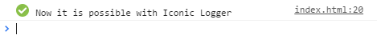

Did you ever wanted to add some flavor to your console.log messages?

Just open your Development Tools in Chrome F12 / Cmd + Opt + I and see it with your own eyes.
Did you see icons embedded into the my secret message?
If not then unfortunately your browser do not support the image output to console.
Only  Chrome can do it. And it is Awesome =)
Chrome can do it. And it is Awesome =)
Instalation
npm install iconic-logger --save
How to use
var iconicLogger = require('iconic-logger');
var myLogger = iconicLogger.log('chrome');
myLogger('Chrome is awesome!');
var myLogger = iconicLogger.log('chrome');
myLogger('Chrome is awesome!');
More details you can find in the documentation.
List of default icons
* click the icon to see example in the console.